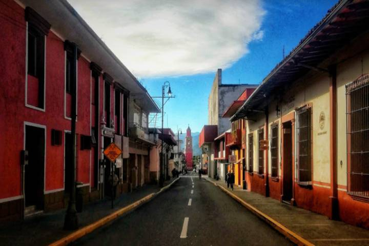
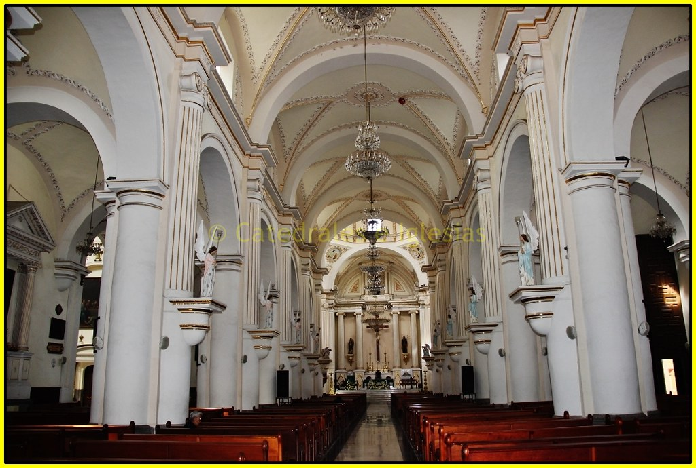
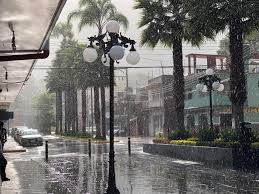

Información sobre Orizaba
Orizaba es una ciudad ubicada en el estado de Veracruz, conocida por su hermoso paisaje natural y su rica historia. En sus calles, la arquitectura colonial se mezcla con la modernidad, creando un ambiente único. Entre sus principales atractivos turísticos se encuentran el volcán Pico de Orizaba, el más alto de México, un lugar perfecto para los amantes de la naturaleza y la fotografía.
Actividades y Atracciones
Además de sus hermosos paisajes, Orizaba ofrece actividades para todos los gustos. Puedes disfrutar de paseos en el teleférico, recorrer su famoso Museo de Arte del Estado o visitar el Parque Nacional Pico de Orizaba. La ciudad también es conocida por su arquitectura, especialmente la Iglesia de San Miguel, un referente del barroco en la región.
Clima y Mejor Época para Visitar
Orizaba tiene un clima templado, lo que lo convierte en un destino ideal para visitar durante todo el año. Sin embargo, los meses de octubre a marzo son perfectos para disfrutar de sus actividades al aire libre debido a la temperatura agradable y los cielos despejados. En verano, las lluvias pueden hacer que algunas actividades al aire libre sean menos cómodas.
